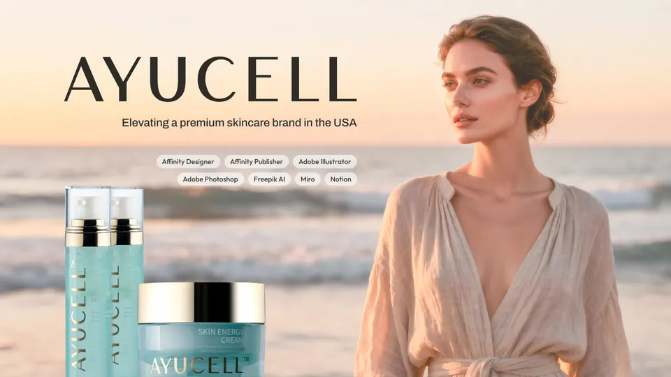
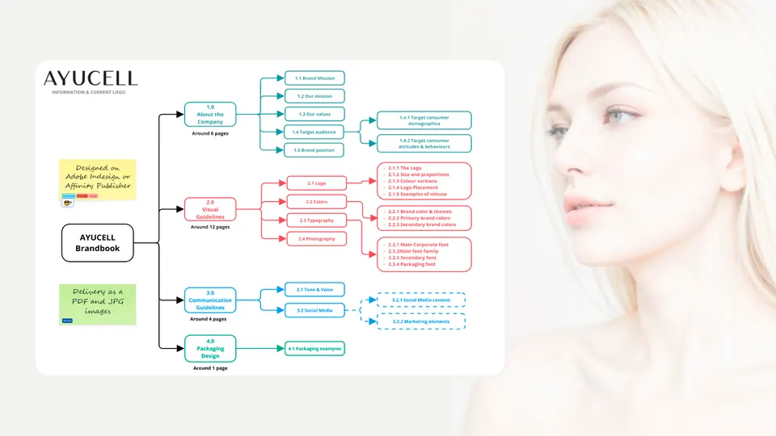
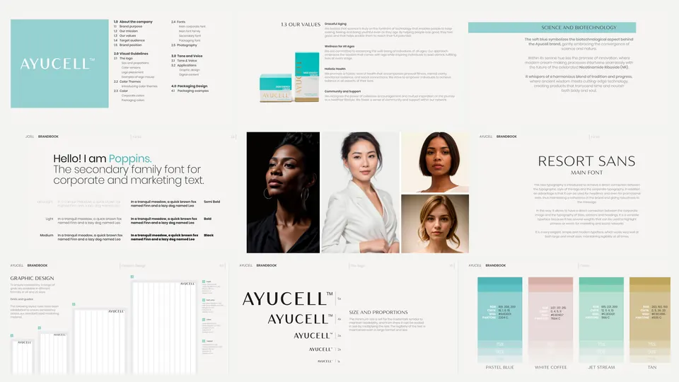
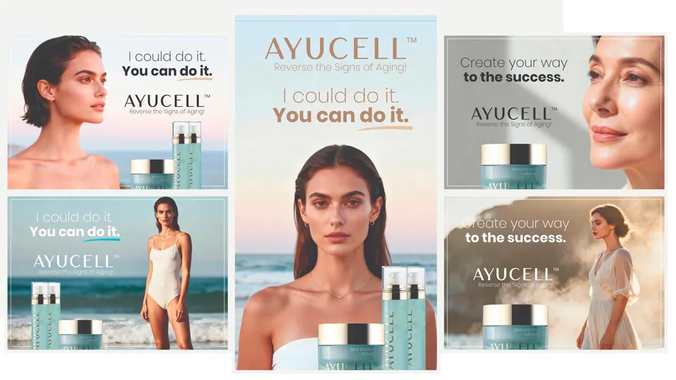
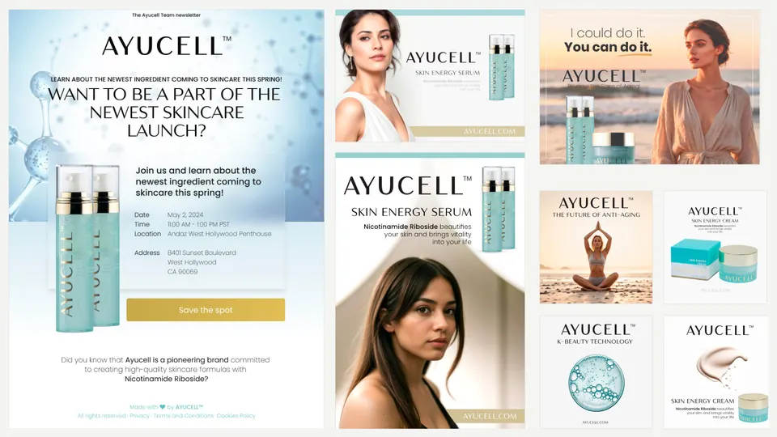

03 — Branding · Diseño gráfico
Ayucell
Una nueva línea de cosmética de lujo basada en tecnología surcoreana entraba en el competitivo mercado estadounidense —dirigida a mujeres de éxito de más de 30 años— con un logotipo y una gama de productos, pero sin un sistema de marca, una voz ni un lenguaje visual definidos.

Resumen
Ayucell es una línea de cosmética de lujo basada en tecnología coreana de cuidado de la piel que entra en el mercado de EE. UU. con un público claro —mujeres de éxito de más de 30 años—, pero aún sin una voz de marca ni un lenguaje visual definidos.
Esa falta de claridad era el verdadero riesgo: sin ella, un producto realmente premium podía parecer confuso o poco profesional junto a competidores consolidados. Trabajé directamente con el cliente, en California, en inglés.
Reto
- 01Existían un logotipo y una gama de productos, pero ningún sistema de marca a su alrededor: había que definir color, uso de la tipografía, imagen y voz.
- 02La marca tenía que resultar creíble y premium para un público estadounidense exigente desde el primer punto de contacto.
- 03El lanzamiento exigía una gran variedad de materiales —impresos, digitales, packaging y redes— que debían sentirse como una sola marca.
- 04La historia técnica (Nicotinamide Riboside, biotecnología coreana) tenía que traducirse a un lenguaje aspiracional, no clínico.
Proceso
Ayucell necesitaba una estructura visual y verbal completa alrededor de su logotipo existente: un Brand Book completo y unas Brand Guidelines detalladas que definieran su personalidad, no solo sus normas.
El cliente quería mantener el logotipo. Recomendé refinar su tipografía, atractiva pero no del todo profesional para un logotipo; decidieron conservarlo, así que construí el sistema alrededor de la marca existente. También creé un primer conjunto de imágenes generadas con IA y redacté los criterios para producir otras nuevas, de modo que el equipo pudiera seguir con su marketing y sus contenidos de forma autónoma.
Arquitectura del brand book
Antes de diseñar una sola página, mapeé todo el brand book: sobre la empresa (unas 6 páginas), guías visuales (unas 12), comunicación (unas 4) y packaging, diseñado en InDesign y Affinity Publisher y entregado en PDF y JPG.

Sistema de identidad
Tamaños y proporciones del logotipo, una paleta de Pastel Blue, White Coffee, Jet Stream y Tan, Resort Sans como tipografía principal y Poppins como secundaria, además de dirección fotográfica y retículas de diseño gráfico.

Un único sistema de marca, desde las reglas del logotipo hasta el día del lanzamiento.
La voz en acción
La voz de marca aplicada a la campaña —“I could do it. You can do it.” y “Create your way to the success.”— adaptada a formatos vertical, horizontal y de redes con imágenes generadas con IA.

Materiales de lanzamiento
Un newsletter de invitación a un evento, banners de sérum y crema y publicaciones cuadradas para redes sobre cuidado de la piel, tecnología K-beauty y bienestar: una imagen coherente en email, web e Instagram.

Solución
Una visión de marca única y coherente —logotipo, color, tipografía, voz y tono— respaldada por un conjunto completo de materiales de marketing de lanzamiento, para que cada punto de contacto se sintiera como la misma marca premium desde el primer día.
Impacto